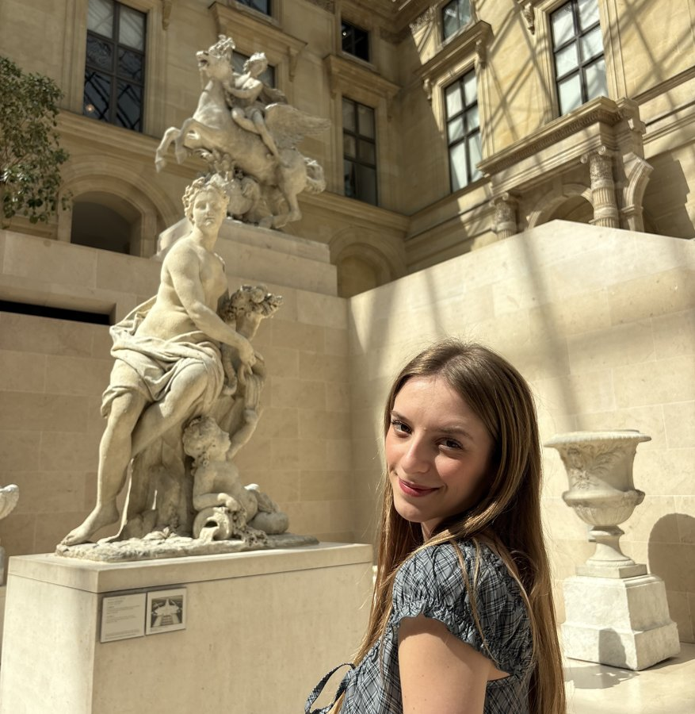

sketchbook
Drawing from life.
Figure studies from my life drawing class and sketches from my travels around Europe. Drawing is a newer passion of mine, and it has quickly changed how I notice colour, proportion and composition in my design work.
featured · Figure Study 1
Reaching for the Stars
Graphite pencil and coloured pencil on paper
A figure study assignment combining figures in motion with an experimental, compact pose.
Reaching for the stars is an embodiment of pushing yourself to achieve. While the figures around the canvas show a maximum of pushing the body, the centre shows a compact figure in a state of boredom, vagueness or emptiness. The stars, representing what she is supposed to achieve, with their glory shining through, mostly just make her blue.
This drawing directs us to finding your purpose while holding on to your sense of self as a youth. The figure at the bottom can be seen reaching for a star, as well as reaching for her true self.
{{blurb}}

I bring a sketchbook everywhere I travel. Here are a few pages from Europe.